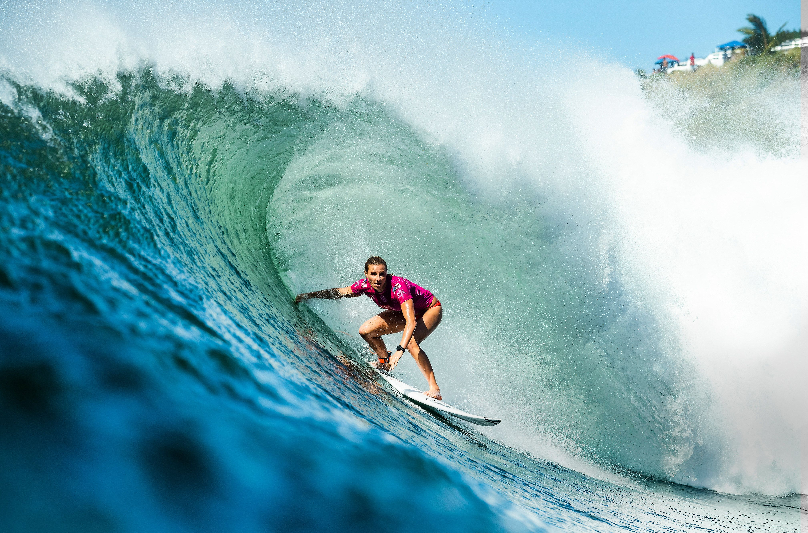
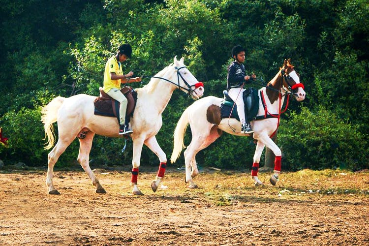
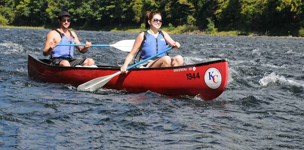
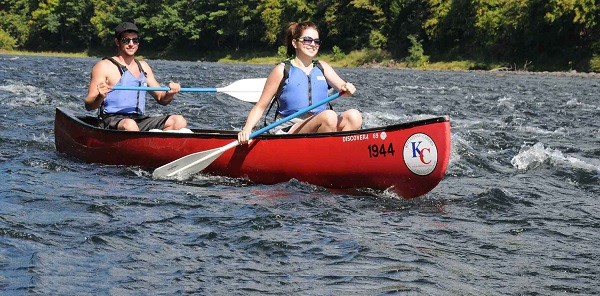
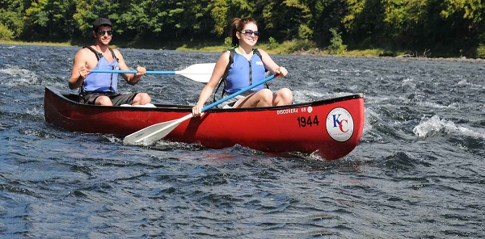

Sports
Here are some great summer / beach sports to play in the summers -
Cricket
Volleyball
Swimming
Canoeing
Cycling
Treking / Hiking
Horse Riding
Surfing
Sailing
Golf
 
 

Summer is the hottest of the four temperate seasons, falling after spring and before autumn. Around the summer solstice, the earliest sunrise and latest sunset occurs, the days are longest and the nights are shortest, with day length decreasing as the season progresses after the solstice. The date of the beginning of summer varies according to climate, tradition, and culture. When it is summer in the Northern Hemisphere, it is winter in the Southern Hemisphere, and vice versa.
Weather in the summer grows warmer, and in some areas, the heat translates to drier temperatures. This hot, dry time of year can lead to droughts, where water is in short supply. Heat waves, times of excessively hot weather that include spikes in temperature, can also occur during the summer. When the North Pole tilts toward the Sun, it's summer in the Northern Hemisphere and vice versa for the South Pole. The temperature averages from 27°C to 50°C.
We should wear cotton clothes in summer because cotton is a type of fibre, that is good absorber of water. So, it absorbs sweat and evaporate it with the surroundings and give us a cooling effect. Also, there are some pores present in cotton which allows easy aeration of body.
Clothes and accessories to wear in summer are -- t-shirts, drresses, flip-flops, caps, sunglasses, shorts etc. Also we should try and wear light coloured clothes in summer because light colours reflect heat which helps our body to keep cool whereas dark colours absorb heat.
During summer, your body needs foods that are water- and electrolyte-rich, and a diet that will keep your energy levels stable. “Drinking more water, eating refreshing vegetables and fruits help a lot in summer to keep the energy levels up.
Mangoes, muskmelons, watermelons, oranges, berries, kiwis, strawberries and papyas are some great watery and healthy fruits fot you to eat in the summer. Some of them are cucumbers, cabbages, tomatoes, radish, green leafy vegetables, cantaloupes, capsicum, etc. These foods can be eaten just as they are after thorough rinsing and by preparing juices, smoothies or shakes
Here are some great summer / beach sports to play in the summers -
